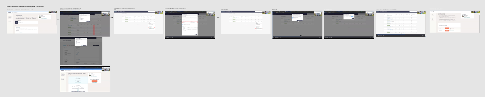
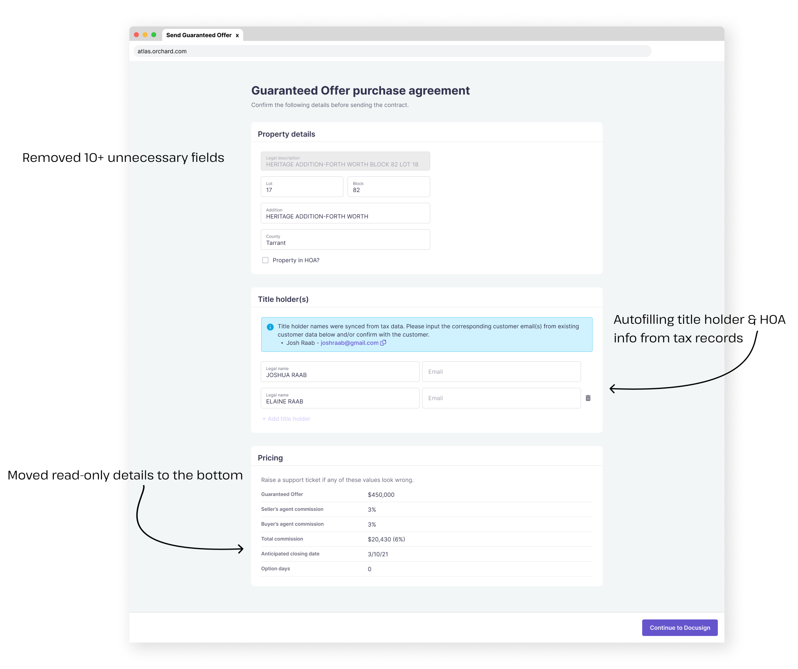

<!DOCTYPE html>
<html lang="en">

<head>
	<title>Emily Porat | Booking workflow</title>
	<link rel="stylesheet" type="text/css" href="styles/global.css">
	<link rel="stylesheet" type="text/css" href="styles/global-mobile.css">
	<link rel="stylesheet" type="text/css" href="styles/nav.css">
	<link rel="stylesheet" type="text/css" href="styles/projects.css">
	<script src="https://ajax.googleapis.com/ajax/libs/jquery/1.9.1/jquery.min.js"></script>
	<link rel="icon" type="image/x-icon" href="pics/favicon.svg"/>
	<!-- Icons -->
	<script defer src="https://use.fontawesome.com/releases/v5.13.0/js/all.js"></script>
	<script defer src="https://use.fontawesome.com/releases/v5.13.0/js/v4-shims.js"></script>
	<!-- Global site tag (gtag.js) - Google Analytics -->
	<script async src="https://www.googletagmanager.com/gtag/js?id=UA-119412150-1"></script>
	<script>
		window.dataLayer = window.dataLayer || [];
		function gtag(){dataLayer.push(arguments);}
		gtag('js', new Date());

		gtag('config', 'UA-119412150-1');

      // load other reused files
      $(function() {
      	$('#nav').load('https://emilyporat.com/nav.html');
      	$('#footer').load('https://emilyporat.com/footer.html');
      });
  </script>
</head>

</html>
<body class="preload">
	<meta name="viewport" content="width=device-width">
	<div id="nav"></div>
	<div id="arrow-up" onclick="slideUp()"><i class="fa fa-angle-up"></i></div>

	<div class="full-width" style="background-color: #D0F2FF; color: black">
		<div class="title-wrapper animate-reveal animate-first">
			<div class="title">
				<div>
					<h4>Orchard • 2023</h4>
					<h1 style="color: black">Customer booking workflow</h1>
					<p class="p-XL">Led research & design for a simplified, faster customer booking workflow.</p>
				</div>
			</div>
		</div> 

		
	</div>


	<div class="panel">
		<div class="body right">
			<div class="context-summary">

				<h2>Overview</h2>

				<p class="p-XL">
					Reduced the time it takes Orchard sales reps to generate booking contracts from 15-30 minutes to 2 minutes.
				</p>

				<div class="space"></div>

				<div class="context-specifics">
					<div class="context-description">
						<h4>Role</h4>
						<p>Design Lead</p>
					</div>

					<div class="context-description">
						<h4>Duratin</h4>
						<p>5 months</p>
					</div>

					<div class="context-description">
						<h4>Release</h4>
						<p>Nov '23</p>
					</div>
					
					<div class="context-description">
						<h4>Team</h4>
						<p>Me, PM, 7 engineers</p>
					</div> 
				</div>

				<div class="space"></div>

				<h3>Background</h3>
				<p> Orchard is a real estate startup that offers streamlined services and tooling for consumers looking to buy and/or sell their home.</p> 
				<ul>
					<li>In order to be considered "booked" with Orchard, customers typically have to sign 2 contracts: a Representation & Program Agreement, and a Guaranteed Offer Purchase Agreement (GOPA).</li>
					<li>The GOPA locks in a "Guaranteed Offer" price that Orchard will buy the customer's home for if it doesn't sell on the market.</li>
				</ul>
				<p>For more context on Orchard's platform tools, check out my case study on our <a href="orchard-roadmap.html">product vision</a>.
				</p>
				

				<div class="space"></div>

				<h3>Problem</h3>
				<p>In order to generate the contracts needed to book a customer during a consultation call, our internal “Service Advisors” (SAs) had to go through a clunky 15-30 min process that was dependent on a separate team. This was a time-waster for both the SA and the customer, and likely impacted our booking rates negatively.
				</p>

				<div class="space"></div>

				<h3>Solution</h3>
				<p>Majorly simplify the booking workflow so that SAs can reliably generate the necessary documents and send them to customers in <2 minutes.
				</p>

				<div class="space"></div>

				<h3>Outcome</h3>
				<p>The new workflow was released on Nov 1. We expect the new flow to improve booking rates, increase visibility, and shorten consultation times.
				</p>

		</div>

		<h2>High-level process</h2>
		<ul>
			<li>Research: shadowing, manager interviews, baseline survey to evaluate satisfaction</li>
			<li>Scoping: defined goals + success metrics of the project and collaborated with eng, product, and legal team to define the data requirements</li>
			<li>Design: low-fi user flows (established a new contract generation pattern), mid-fi prototypes, final design</li>
			<li>Release: QA testing, training internal users, monitoring for feedback & issues</li>
		</ul>

		<div class="space"></div>

		<h3>Pain points uncovered from user research</h3>
		<p>The old booking workflow was:</p>
		<ul>
			<li>A 20+ step process to generate 2 contracts.</li>
			<li>Involves many legacy steps that are now meaningless.</li>
			<li>Typically occurs during a live call with a customer — SA is trying generate these contracts and make small talk at the same time.</li>
			<li>Requires reaching out to our Transaction Operations team to complete & send out one of the contracts (which can take up to 30 mins).</li>
			<li>Once sent, there wasn’t one clear place to view the contract statuses or make updates to them.</li>
		</ul>
		<div class="space"></div>
		<div class="full-width-mid-page">
			<div class="panel dark" style="text-align: center; background-color: #E5E5E5;">
				<div class=p-XL style="padding-top: 100px; color: black; padding-left: 20%; padding-right: 20%; width: 60%">The old workflow was 20+ steps, most of which were meaningless legacy functionality</div>
				
			</div>
		</div>

		<div class="space"></div>

		<h3>Project scoping & requirements</h3>
		<div class="space"></div>
		<h4>High-level goals</h4>
		<ul>
			<li>All booking contracts can be sent within 2 minutes.</li>
			<li>Internal users are able to reference the latest contract status and amendments through one designated module.</li>
		</ul>

		<div class="space"></div>

		<h4>Success metrics</h4>
		<ul>
			<li>Speed - All booking contracts can be sent within 2 minutes AND without depending on another team.</li>
			<li>Booking rates - If booking docs are always sent during consultations, more customers may book then & there.</li>
			<li>Consult volume - If we can shorten consults by 15 mins, that frees up SA time to take on more consults per day and improves scheduling availability.</li>
			<li>Labor costs savings - Removing the contract generation task from the other team enables us to utilize that team’s time on other work instead.</li>
			<li>Tooling satisfaction - Improve SA efficiency and general happiness with tooling.</li>
		</ul>

		<div class="space"></div>
		<div class="space"></div>

		<div class="full-width-mid-page">
			<div class="panel dark" style="text-align: center; background-color: white;">
				<h3 style="padding-top: 100px; color: black;">Designing the new workflow</h3>
				<div class=p-XL style="padding-top: 10px; color: black; padding-left: 20%; padding-right: 20%; width: 60%">I started by evaluating the existing form that users filled out to generate the Guaranteed Offer Purchase Agreement today.</div>
				
				<div class=p-XL style="padding-top: 100px; color: black; padding-left: 20%; padding-right: 20%; width: 60%">Then, I mapped out a high-level workflow for the new process.</div>
				
				<div class=p-XL style="padding-top: 100px; color: black; padding-left: 20%; padding-right: 20%; width: 60%">Next, I created a set of prototypes exploring different interaction patterns. </div>
				<p style="padding-top: 10px; color: black; padding-left: 20%; padding-right: 20%; width: 60%">The prototype below shows a flow where the contract generation opens in a new tab. We later decided it would be more fluid to open the contract form in-place even though that form technically lived in a separate tool.</p>
				
				<div class=p-XL style="padding-top: 100px; color: black; padding-left: 20%; padding-right: 20%; width: 60%">Last, I aligned with my team on a final design flow (4 steps instead of 20!)</div>
				
				<div class=p-XL style="padding-top: 100px; color: black; padding-left: 20%; padding-right: 20%; width: 60%">Here's a closer look at the new & improved contract generation form:</div>
				
			</div>
		</div>

		<h3>Validating the design</h3>
		<ul>
			<li>At each step, I presented the designs/prototypes to our tech lead and/or entire eng team to ensure what I was proposing was technically feasible.</li>
			<li>Myself and my PM had weekly check-ins with a stakeholder group including an SA manager to review designs and ensure everything was making sense.</li>
			<li>I also ran a few separate concept review sessions with individual Service Advisors once we aligned on a final flow.</li>
		</ul>

		<div class="space"></div>
		<h3>Rollout & outcome</h3>
		<p>To ensure a smooth rollout, my PM and I organized 2 training sessions + optional office hours for SAs, and set up a Slack channel for feedback and questions.</p>
		<p>This was released Nov 1 - we expect the new flow to improve booking rates, increase visibility, and shorten consultation times.</p>

	</div>


<!--             <div class="so-what" style="background-color: rgba(160, 97, 213, .2); border-left: 10px solid var(--purple); ">
        		<h4>Want the full case study?</h4>
        		<p>Please <a href="mailto:emporat@gmail.com" target="_top">reach out directly</a> and I can share more details and designs.</p>
        	</div>  -->

			</div>


		</div>
	</div>
	  	
  	<div id="footer"></div>
  	</meta>
  </body>

  <script src="js/general.js"></script>

</html>